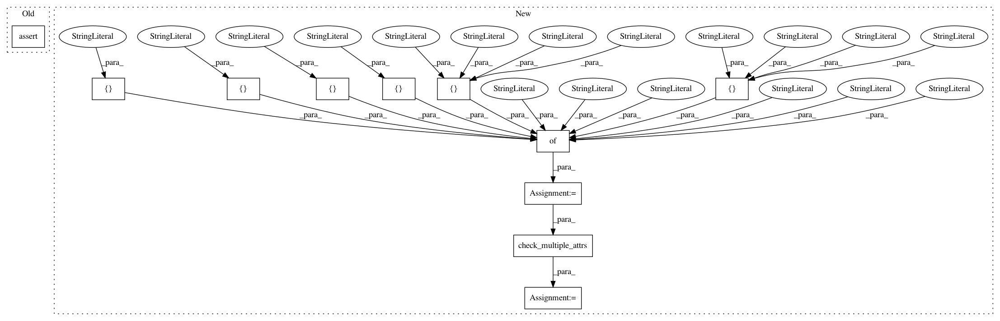

87cd71c927c8006c135c9a0e8ebea8cb6a64852d,arviz/tests/test_data.py,TestCmdStanNetCDFUtils,test_inference_data_input_types1,#TestCmdStanNetCDFUtils#Any#Any#,1188
Before Change
assert hasattr(inference_data, "sample_stats")
assert hasattr(inference_data.sample_stats, "log_likelihood")
assert hasattr(inference_data, "posterior_predictive")
assert hasattr(inference_data, "observed_data")
def test_inference_data_input_types2(self, paths, observed_data_paths):
Check input types (change, see earlier)
After Change
"eta": ["school"],
},
)
test_dict = {
"posterior": ["mu", "tau", "theta_tilde", "theta"],
"prior": ["mu", "tau", "theta_tilde", "theta"],
"prior_predictive": ["y_hat"],
"sample_stats": ["log_likelihood"],
"observed_data": ["y"],
"posterior_predictive": ["y_hat"],
}
fails = check_multiple_attrs(test_dict, inference_data)
assert not fails
def test_inference_data_input_types2(self, paths, observed_data_paths):
In pattern: SUPERPATTERN
Frequency: 4
Non-data size: 11
Instances
Project Name: arviz-devs/arviz
Commit Name: 87cd71c927c8006c135c9a0e8ebea8cb6a64852d
Time: 2019-03-28
Author: oriol.abril.pla@gmail.com
File Name: arviz/tests/test_data.py
Class Name: TestCmdStanNetCDFUtils
Method Name: test_inference_data_input_types1
Project Name: arviz-devs/arviz
Commit Name: 87cd71c927c8006c135c9a0e8ebea8cb6a64852d
Time: 2019-03-28
Author: oriol.abril.pla@gmail.com
File Name: arviz/tests/test_data.py
Class Name: TestCmdStanNetCDFUtils
Method Name: test_inference_data_input_types4
Project Name: arviz-devs/arviz
Commit Name: 68a4df40dc818732d736e7b36ca4dbe75e22aec0
Time: 2019-07-15
Author: oriol.abril.pla@gmail.com
File Name: arviz/tests/test_data.py
Class Name: TestDataNetCDF
Method Name: test_io_function
Project Name: arviz-devs/arviz
Commit Name: 87cd71c927c8006c135c9a0e8ebea8cb6a64852d
Time: 2019-03-28
Author: oriol.abril.pla@gmail.com
File Name: arviz/tests/test_data.py
Class Name: TestCmdStanNetCDFUtils
Method Name: test_inference_data_input_types3